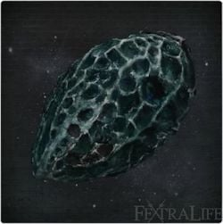

Tonsil Stone |
||||
|---|---|---|---|---|
|  | ||||
|
||||
Tonsil Stone is a Key Item in Bloodborne.
Tonsil Stone Usage
- Will allow access to the Nightmare Frontier when grabbed by the Lesser Amygdala in the church at the end of a path to the left of (while exiting) the Grand Cathedral.
Location
Received from the first red lantern NPC (i.e. any NPC speaking from inside a house) you speak to after entering the Forbidden Woods. Provided that the house is still occupied, a different voice will replace the normal NPC and will offer you this item and some vague instructions. After reloading the area the normal NPC dialogue will resume.
- Red Lantern locations (not exhaustive, just some more convenient examples) :
- Central Yarnham - Gilbert is available right at the first lightpost. Before the large bonfire is a red lantern door near a wagon. After taking the first railing skip there is a small fountain with a red lantern and door.
- Cathedral Ward - Instead of going left to Hemwick, go right. In the area with the hunter encounter you will find two red lanterns that may provide the stone.
- Hemwick Charnel Lane - House between first lightpost and elevator.
- Forbidden Woods - The house on a hill, near the dog cages at the edge of the hamlet.
- Lanterns with NPCs you have sent away will be unresponsive and so can not offer the stone after the NPC has left their dwelling.
- Young Yharnam Girl, Lonely Old Woman, Skeptical Man, and Arianna are the NPCs for whom this can happen.
Notes
- Many lantern NPCs become unresponsive after the Blood Moon world change (triggered when you approach Queen Yharnam after killing Rom, the Vacuous Spider) and thus limit where you can receive this stone post-Rom. This is not that important as you will gain access to the Lecture Hall and thus the Nightmare Frontier after killing the One Reborn, which is right after Rom.
- If you still want to get it, the red lantern in the Forbidden Woods will remain available.
- The voice speaking during the Tonsil Stone monologue is of Patches the Spider. If you get grabbed by the Amygdala, this will be the NPC you will meet in Lecture Building (1F).
Trivia
- Tonsil translates to "Amygdale" in French, in Spanish it is "Amigdala" and in Greek it is "αμυγδαλα" (amygdala).
- You won't lose your blood echoes when grabbed by Amygdala, however if you get grabbed by Amygdala again for the next time, you will lose health and potentially die due to Frenzy.
- After 40 Insight the Amygdala will be visible even before the Blood Moon.
- See Patches the Spider for more details
 Anonymous
AnonymousI killed Rom and struggled a bit to find it.. Got it from a house in the Forbidden Woods near the dog cages near the village with the pitfall trap.
- Anonymous
In real life, tonsil stones are formed when debris, such as food, dead cells, and other substances, become trapped on the tonsils. The debris turns hard, forming tonsil stones. Sometimes called tonsil calculi or tonsilloliths, tonsil stones can sometimes irritate the tonsils and the throat. They appear as a white or yellowish hard mass, ranging in size from very small to very large. The largest recorded tonsillolith, at 14.5 centimeters was recorded in 1936.
People with tonsil stones may not know what they are. Tonsil stones can become a home for bacteria and may have an unpleasant smell.
- Anonymous
i am going to settle this once and for all: you can get the stone from ANY npc house at ANY point after entering the forbidden woods, granted that the house was still occupied at the time. a certain "dubious soul" momentarily replaces EVERY npc that resides in a house in order to give you the stone and then leaves after you refresh the area. now stop commenting about which random-ass npc you got it from. somebody needs to fix the damn page to make this information more clear. i'd do it myself but i refuse to make an account on this cesspool of a wiki
- Anonymous
To editor, at 50 insight the Amygdalas are visable. Not 40.
- Anonymous
I used the beast grab skip and (without doing anything other openeing the gate (killed no bosses) got the tonsil stone from the Little's girls window?.
- Anonymous
I got this stone from Gilbert. (the guy in the widow near the Central Yarnham Lamp)
I have 20 insight, level 45 have the moon out (killed the cleric beast, witch,vicar Amelia,Father Gasconie ). And I just got the Tosil Stone from the guy in Gasconies daughters window. Normally I get it near the poison cave in the forbidden woods. I wonder where else it pops up.
- Anonymous
I got the stone from one of the windows after beating Rom. The young Yharnam girl window to be precise. So this entry seems to be mistaken.
- Anonymous
on a recent play through have 40 insight, entered forbidden woods, but not beaten rom yet. tried gilberts window, the window in the woods, and the window in lower cathedral. am i bugged?
- Anonymous
I can confirm you don't need to kill Vicar Amelia to get this. Simply entering the Forbidden Woods allowed NPC's to offer me the stone, even if I skipped Vicar Amelia through any method. I'm on the current patch and using a deathcam exploit to access Forbidden Woods early, the NPC that was SUPPOSED to give me my Flamesprayer, instead gave me this after lighting the first lantern in FW while Vicar Amelia is alive.
- Anonymous
If you have the DLC it will use the DLC item and take you to the DLC area instead of Nightmare Frontier
- Anonymous
y'all know you can just get it from a random person in the forbidden woods, wayyy before you kill Rom.
- Anonymous
I discovered that you can receive the Tonsil Stone from every door in Yharnam with a red lantern after defeating Amelia.
- Anonymous
- Anonymous
I got one yesterday after killing rom (latecomer to the game it is really fun) there was an NPC that gave me the stone he was in one of the doors on the way to Vicar Amelia I think he was the one that was originally yelling CURSES when you knock.
- Anonymous
got one after killing vicar amelia and heading back to the guy just nearby central yharnam bonfire.
- Anonymous
- Anonymous
Oh man, I have tonsil stones; they *****ing suck. Smell awful and big ones make me feel like I'm choking on something until I hack them up.
BB is triggering my throat anxiety, FROMSoft plz nerf.
/s
- Anonymous
- Anonymous
The skeptical man just gave me the tonsil stone after having killed vicar amelia, the witches of hemwick and entering the forbidden woods, all in that order.
Now i cant seem to get him to say anything else so i can't direct him to a safe place.
- Anonymous
I have just entered the nightmare frontier and decided to go back to central Yharnam for some Blood Vials and this NPC is in the window where Gascoigne's daughter would have been. Why is this?
- Anonymous
I got the tonsil stone after killing vicar amelia but i go to the side of the cathedral and when the Amygdala grabs me it just frenzies me and put me back to the floor! HELP!
i just started but echos gliched my way to level 205, door in central yharnam after dropping down after first light and enemy on the main street gave me the tonsil stone
- Anonymous
I got this item simply by strolling around in Yharnam trying to collect more blood vials. I went to the coughing guy's window and noticed that he was talking in a clearer voice. After that most Windows and Doors NPC had the same text/voice for the entire playtime. I believe this happened after I killed the blood starving Beast and later got caught by a Stalker. -Q91
- Anonymous
I got him to show up early in a NG+ by simply going to the forbidden woods early with the glitch. Simply ran to forbidden woods and ran back to yharnam. If you killed anything before going there everything will have re-spawned and patches will be in the houses. Just retried it in a new game and it worked again.
- Anonymous
I have the tonsil stone, have not reached 40 insight or beaten Rom, and cannot see the lesser Amygdala which is on the outer wall of Oedon Chapel. Got the stone from an NPC in Forbidden Woods near the poison cave, if it matters.
- Anonymous
Tonsil stone is given in more places than the Woods. I was just headed there to get the stone, but decided to talk to the NPC in the window by the Central Yharnam light and it ended up being a different NPC than usual and he gave me the stone. It might be that as long as you've reached a certain point in the game then any Red Light NPC will give you the stone.
- Anonymous
I was able to obtain the tonsil stone from the window of the Young Yharnam Girl after killing Rom, The Vacuous Spider, despite this wiki saying it's not possible.
What does that mean ?
I got this but when i die i still loss my blood echoes ! :-/
- Anonymous
I believe it refers to the cerebellar tonsil, a part of the brain located next to the amygdala (which I might add, is the title of the enemy which is related to it).
- Anonymous
I managed to get this in the Cathedral Ward, after I killed Amelia. I had put on the Black Church attire and spoke to a guy at the window, down the alleyway where there are the four lanterns. At the starting lantern, turn left and go though the door and go right and up the step, right and then turn left at the grave yard.
- Anonymous
Easiest way to get tonsil stone is to beat vicar. then go to forbidden woods. you do not need to light the bonfire there. Go back into cathedral ward and talk to any of the red lanterns along the foggy street. Patches replaces all door that give responses. only doors he doesn't replace are those already with no response.(like the arrianna if she moved already) Just did this in game. still dont have forbidden forest lamp lit.
- Anonymous
In my playthrough, I beat Blood-Starved Beast and then did the skip into Forbidden Woods. This caused the NPCs to change and give me the stone, even though I have yet to beat Vicar Amelia. I'll try on another file to confirm if it's just entering Forbidden Woods or if there are other requirements.
- Anonymous
Got the stone, but when the amygdala grabs me i stay in the same place. Bug?
- Anonymous
In NG+ I forgot to pick up the stone before killing Rom and then Patches. Now when I go to the Forbidden Ws I get the talk option pop up but no dialogue starts and however many times I press X I don't get given the stone.
- Anonymous
I just spent about 45 mins confirming the trigger for tonsil stones being offered at the red lanterns. There may be other triggers and other ways to access the item. But I confirmed that any previously occupied red lantern door/window changed to patches as soon as i lit the forbidden forest lightpost.
- Anonymous
- Anonymous
This page says you cannot get it from the skeptical man and I just did. I haven't killed Rom yet, but I somehow exhausted his dialogue without telling him to go anywhere. Now he gave me the stone from his residence when I went to revisit
- Anonymous
If you can access the Nightmare Frontier from the lecture building, why does is this item hold relevance or even exist?
Don't bite on it. By the gods, never bite on it.
17
+10
-1